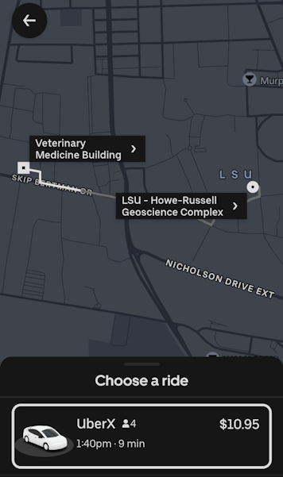

Maps Connected to Information
Table of Contents
- Information, the core of maps
- Connecting maps to information
- Maps online
- Servers and clients
- Conclusion
This lesson will go into more detail about modern concepts and technologies for sharing information, especially those relevant to geographic information.
Information, the core of maps
This semester, you will be introduced to a variety of technical topics related to maps and the Internet, but I want you to keep in mind that at the heart of it all is information.
There is information for research, business, government, entertainment, personal use, etc., and over the centuries our information has been communicated in different ways. Books, letters, clay tablets, maps, websites, photographs, and art are just a few examples of media that have carried information for us.
 Figure 1. Babylonian map on a clay tablet, 700-500 BC. It is an early example of media storing and communicating information about where things are.
Figure 1. Babylonian map on a clay tablet, 700-500 BC. It is an early example of media storing and communicating information about where things are.
By the mid-20th century, it had become practical to store information digitally on computers, though it was not as practical to share information between computers, especially globally. The Internet and its earlier forms helped mitigate that problem, connecting computers together and enabling software to transfer documents, images, and more around the world.
Systems for dealing with information were in demand because the amount and complexity of information being collected was growing. Environmental surveys, business information, satellite imagery, and other datasets from various sensors were contributing to archives of information too large to be manually recorded and analyzed on paper by people. The use of computers became necessary to handle the volume of data being collected, including data with location attributes, i.e., data that could be mapped.
Connecting maps to information
Among this long history and evolution of information transfer, this course will focus on the transfer of geographic information with Internet-based geographic information systems (GIS), terms first introduced in Lesson 1. GIS has roots in environmental applications such as land management and infrastructure in the 1960s and 70s, so digital geographic information has traditionally included features that could be printed on a map and even imagery from satellites and aircraft. In the 21st century, geographic information commonly includes media like video and photos that can be tagged with a location.
The discipline of Geography has long been concerned with the location and distance of things, including human and environmental features. The rise of computers in the 20th century created new opportunities for quantitatively analyzing geographic information, and demand was created for software that could understand location. Because geographic coordinates like latitude and longitude are numeric, computers can understand location in mathematical terms. This new type of computer system was coined a “geographic information system” in the 1960s.
 Figure 2. A geographic information system used at Louisiana State University in the 1980s for land use assessment.
Figure 2. A geographic information system used at Louisiana State University in the 1980s for land use assessment.
GIS connects maps to data, so when the data changes, the map changes. GIS turned maps into moving, living visualizations on the screens of early computers. Analysts could use the software to display data at different scales and control what data was visible on a map, operations that are familiar to us today such as zooming in and out and showing/hiding layers.
Originally developed for mainframes and specialized computer systems, GIS software eventually became available as desktop applications on personal computers and as web applications on the Internet, the latter of which brought the power of GIS to smartphones.
Datasets in GIS software are typically organized into layers. A layer consists of imagery or graphics drawn on a map to represent geographic information of a similar type, such as points representing airports in one layer, lines representing rivers in another layer, lines for roads in another, polygons for national parks in another, and a satellite image in the final layer.
 Figure 3. GIS apps typically contain maps with operational layers (the main information being communicated), basemaps (for reference), and tools (for interacting with the maps).
Figure 3. GIS apps typically contain maps with operational layers (the main information being communicated), basemaps (for reference), and tools (for interacting with the maps).
The layers containing the main information you are communicating in your map—typically represented by points, lines, and polygons—are called operational layers. An individual point, line, or polygon object in a layer is known as a feature. Each feature in an operational layer has attributes, which you can imagine as a spreadsheet or table of information; for example, a layer of airport locations might have a table of attributes including each airport’s name, identifier code, and a count of runways.
 Figure 4. Operational layers contain the primary subject matter of the map. They contain features such as points, lines, or polygons. In the figure, the operational layers are the earthquakes (points) and railroads (lines), while the gray background is a basemap provided for reference.
Figure 4. Operational layers contain the primary subject matter of the map. They contain features such as points, lines, or polygons. In the figure, the operational layers are the earthquakes (points) and railroads (lines), while the gray background is a basemap provided for reference.
A layer that acts as a background for reference or context is the basemap. Basemaps often consist of streets and borders or satellite/aerial imagery. Most of the popular map apps like Google Maps allow users to switch the basemap from streets to satellite.
 Figure 5. Three examples of basemaps showing, from left to right, satellite imagery; roads, borders, and placename labels; and a stylized basemap in a dark theme. Basemaps act as a background to provide a reference or context for operational layers.
Figure 5. Three examples of basemaps showing, from left to right, satellite imagery; roads, borders, and placename labels; and a stylized basemap in a dark theme. Basemaps act as a background to provide a reference or context for operational layers.
 Figure 6. An operational layer displayed in GIS software without a basemap (left) and with a basemap for reference (right), the latter giving the audience context about the data’s location and surroundings.
The layers in a GIS map can be thought of as being ordered from top to bottom, or foreground to background. Visually, layers on “top” cover any layers beneath them. It is up to you, the map designer, to decide how to order your layers. A basemap layer will always be the bottom layer of your map; if a basemap were placed on top, it would hide your other layers!
GIS apps can also offer various tools to help users interact with the map and its data. For example, tools might allow you to:
- Navigate the map – zoom, pan, search an address
- Toggle data - show/hide layers, switch basemap
- Filter – “Show only earthquakes from the year 2000”
- Summarize – “Count the number of earthquakes for each magnitude”
- Spatial analysis – “Show all railroads within 5 miles of an earthquake epicenter”
 Figure 7. GIS app with tools that let users interact with the map and data.
Figure 7. GIS app with tools that let users interact with the map and data.
Maps online
Improvements in Internet technology in the 1990s such as web browsers made it feasible for interactive maps to be shown on websites with basic functions like zooming and panning. However, special considerations were needed for transmitting and displaying geographic information on the web, including slow download speeds, low processing power on personal computers, and the limitations of web browsers at the time.
Therefore, a set of software and techniques emerged for organizing, analyzing, displaying, and sharing spatial data online, known collectively as web GIS (encompassing similar terms, web cartography and web mapping).
 Figure 8. Brochure from the 2000s advertising ArcIMS, a web GIS server application. Source: Esri, 2001.
Figure 8. Brochure from the 2000s advertising ArcIMS, a web GIS server application. Source: Esri, 2001.
In web GIS, applications like websites and mobile apps often communicate with databases of geographic information. Using Uber as an example, the app displays a map with a basemap and operational layers, including a point layer showing your location and the location of drivers and a line layer showing a route. The information in those layers is coming from files and databases stored on servers, and then displayed in the app on your phone.
 Figure 9. Uber map with operational layers and basemap. The mobile app displays the map data after requesting it from Uber’s servers or any third-party servers that Uber is using.
 Figure 10. Modern web GIS application combining multiple data sources and visualizations into a dashboard. Source: JHU COVID-19 Dashboard (no longer accessible).
Figure 10. Modern web GIS application combining multiple data sources and visualizations into a dashboard. Source: JHU COVID-19 Dashboard (no longer accessible).
Servers and clients
As mentioned, one of the key features of GIS software is that it connects maps with data. The maps shown on screen in GIS software are driven by the underlying data, and when the data changes, the map changes. The same is true for web GIS.
Where is this data stored, though?
In desktop GIS software, the data being displayed on screen is often from files saved on the user’s computer. The files might have been downloaded from the Internet, copied from a portable disk, or opened from a local network drive. This is not true for web GIS.
When you download the Google Maps app on your phone, of course you are not downloading terabytes of satellite imagery and other data that will be stored on your phone. The data is stored in Google’s data centers, and Google serves the tiny portion you search for to your phone app as needed over the web.
 Figure 11. Racks of servers in a Google data center in Oklahoma. Source: Google.
Figure 11. Racks of servers in a Google data center in Oklahoma. Source: Google.
Servers are computers and applications that provide (serve) resources to other computers and applications. The computers and applications that request and receive resources from servers are clients. Any computer can be a client; a server can act as a client if it is consuming resources from another server. In turn, any computer can be a server. You could configure a laptop as a web server if you wanted to. But in practice, computers used as dedicated servers in data centers are built with specialized hardware meant for high performance and constant use. Furthermore, a server might not always be a physical piece of computer hardware. “Server” could refer to an application or a virtual machine, rather than the physical hardware. One physical server computer could have multiple server applications and virtual machines installed. Therefore, a server can be thought of as a role more so than a particular type of device.
 Figure 12. Servers manufactured by Dell, installed in racks in a cabinet (left) and a row of cabinets (right) in a data center. These physical servers host virtual machines that run software for websites and web GIS applications.
Figure 12. Servers manufactured by Dell, installed in racks in a cabinet (left) and a row of cabinets (right) in a data center. These physical servers host virtual machines that run software for websites and web GIS applications.
Web GIS software uses a client-server model, a common model in computer networking in which client applications and devices (e.g., web browsers on PCs, mobile apps on phones) make requests to servers for resources (e.g., map data, webpages, images, PDFs). You could load data, such as car crash locations, into GIS server software to make it accessible to clients via a web address, such as example.org/maps/car_crash_points_2019.
Regarding the car crash data example, here is something to think about before we conclude this lesson: what do we want to happen at that web address, example.org/maps/car_crash_points_2019? Do we want it to show a webpage with a text introduction? Do we want it to show a map of crashes? A table with columns and rows of data? That depends on how we intend people to consume the data…or if our intended consumers are people at all.
Conclusion
Web GIS is another chapter in the long history of how humans share and manage information. The existence and evolution of web GIS is closely linked to other information technologies developed in the second half of the 20th century—the advancement of computers and the internet created opportunities for understanding and communicating the growing volumes of geographic information being collected by surveys, aircraft and spacecraft, and other sensors. Web technology and GIS software gave interactive maps a place in the multimedia landscape of the web, with the special set of technologies and techniques needed to achieve this becoming known as web GIS.
This topic continues with examples and an exercise in Lesson 3.
↑ Top
← Back to Lessons